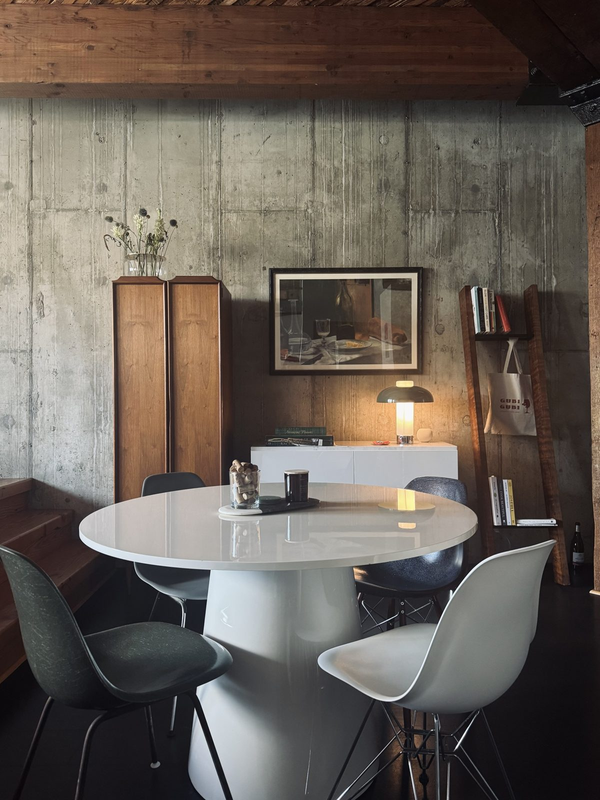
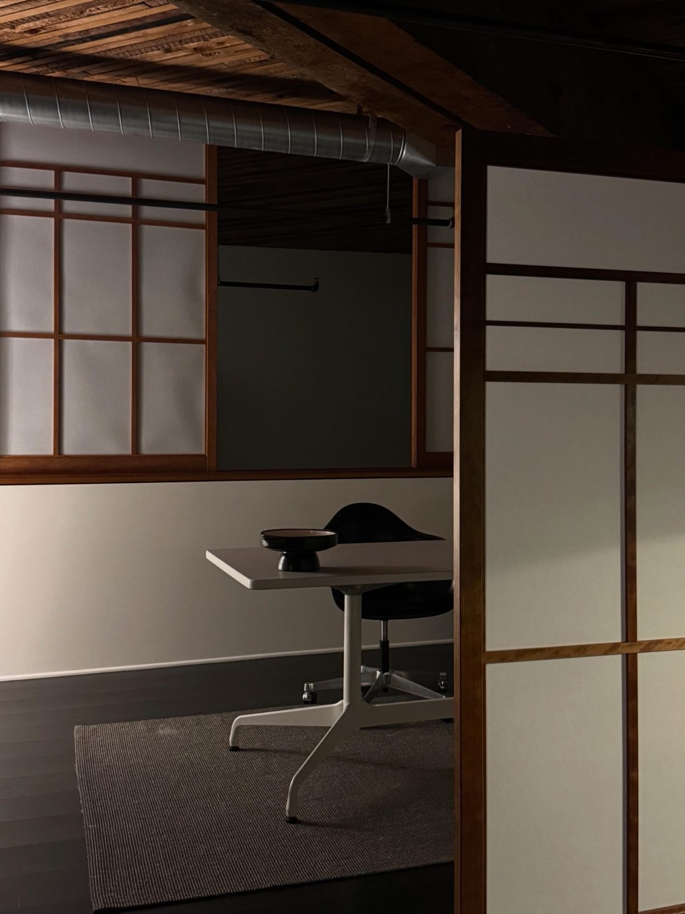
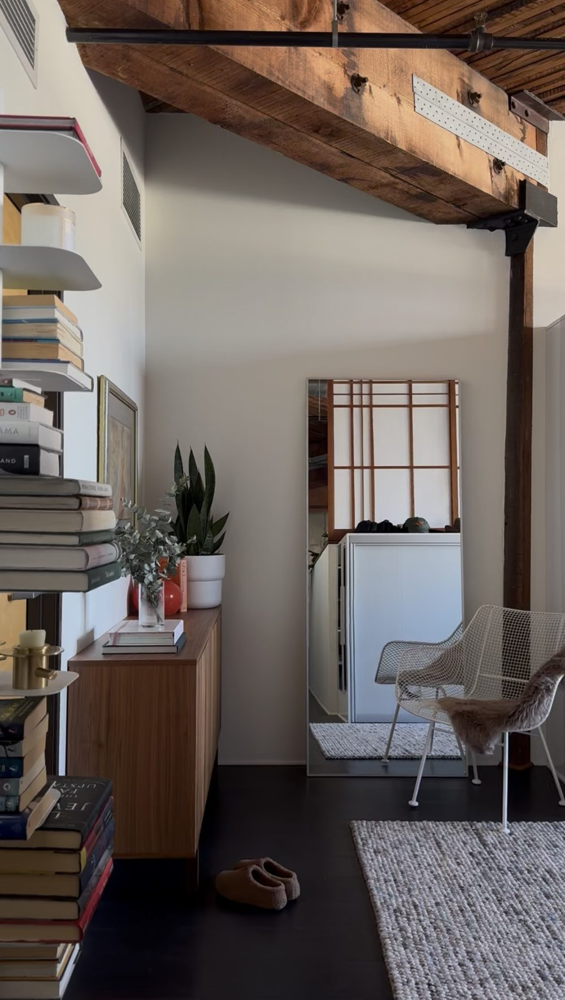
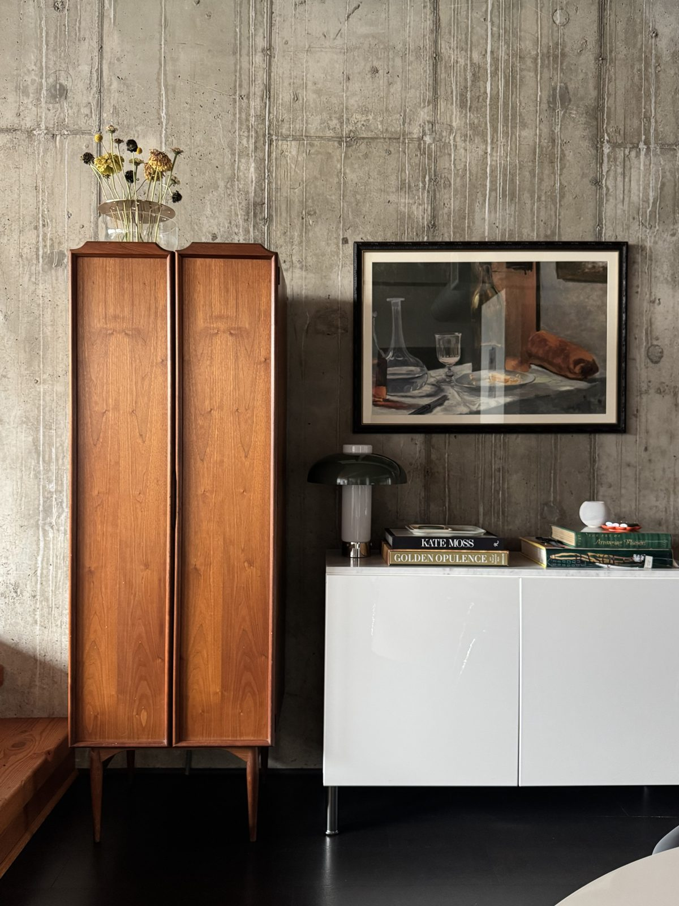
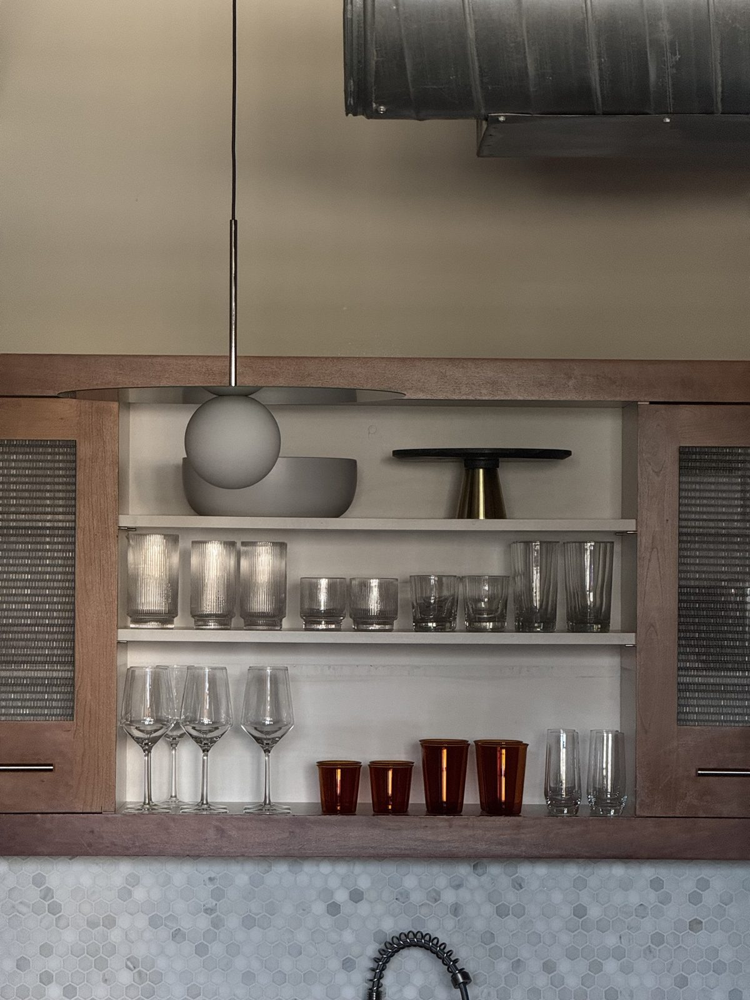
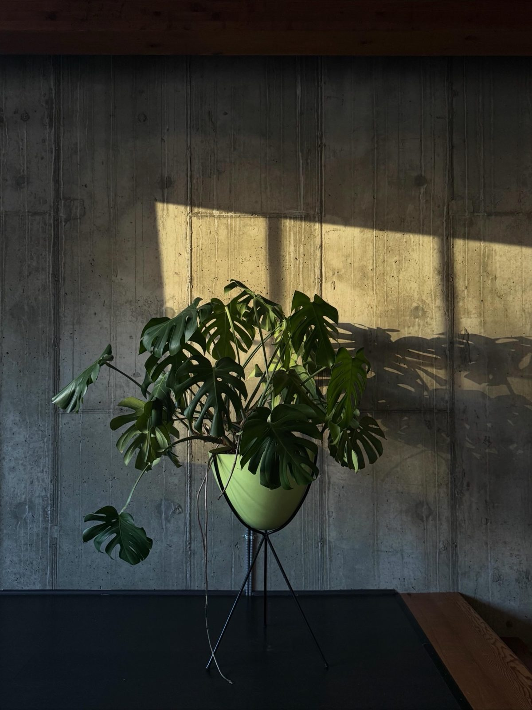
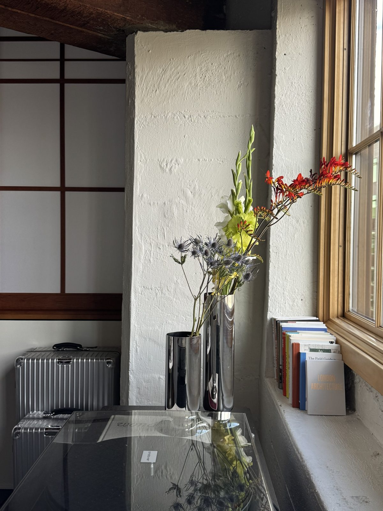

Work / My own loft
The Marshall-Wells loft
One enormous room in a 1910 warehouse, and the question every open plan asks: how do you live in all of it at once?

- Where
- Pearl District, Portland, Oregon
- Building
- Marshall-Wells, a 1910 hardware warehouse designed by Daniel Burnham
- When
- Moved in June 2026
- Scope
- Furnishing, layout, lighting
- Style
- Tasteful eclectic
The room
I live in a hardware warehouse built in 1910 and designed by Daniel Burnham, the architect of New York's Flatiron Building. The loft is one enormous open room, under an old timber ceiling and against a wall of board-formed concrete.


The challenge
An open plan is generous and unforgiving. Work, dinner, and rest all want their own territory, and everything is visible from everywhere. I wanted a home that feels compartmentalized and still open.
The decision
Shoji sliders. Closed, they give the office walls. Open, they disappear, and the loft is one room again.

The mix
Many materials, edited hard.
I call the style tasteful eclectic. It borrows Kelly Wearstler's appetite for mixing materials, then edits before it reaches maximalism. Concrete and old timber set the tone. Warm wood, paper, glass, and polished steel answer it.


